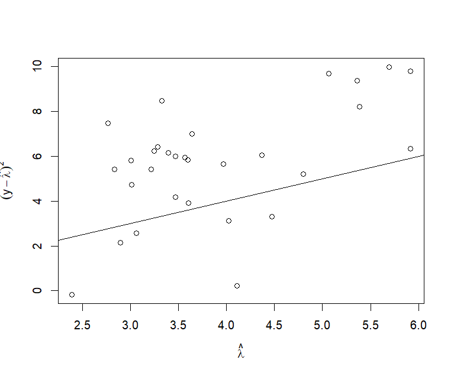
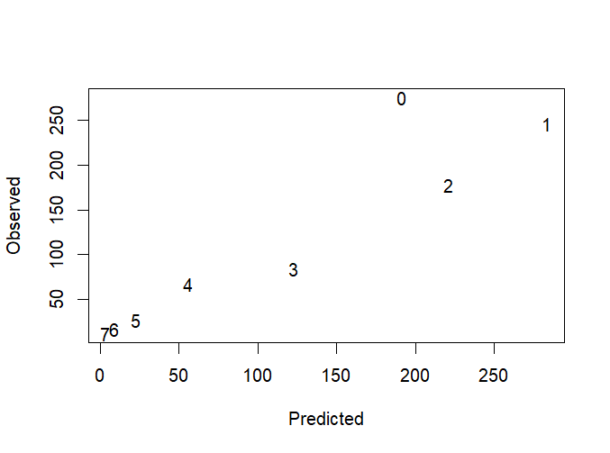

这一讲为实践内容，我们将学习如何使用R语言建立和拟合泊松回归模型，并对模型和参数进行假设检验。
本讲默认读者已经了解R语言的基本语法，能够在自己的电脑中成功编写和运行R脚本。
一、泊松回归模型
1.1 无偏移量的泊松回归模型
我们先从无偏移量的泊松回归开始讲起。与逻辑回归类似，我们同样使用R内置的glm()函数来拟合，只需指定family=poisson即可。
接下来我们使用faraway中的gala数据集来进行测试，该数据集描述了加拉帕戈斯群岛的物种信息，每行代表一座岛屿（共30座），列分别代表物种数量(Species)、岛屿面积(Area)、最高高地(Elevation)、最近岛屿距离(Nearest)、到Santa Cruz岛的距离(Scruz)、邻接岛面积(Adjacent)。这里我们考察岛屿的物种数量和剩余变量之间的关系。
如果你看过回归分析第4讲的内容，你会发现这是我们在拟合一般线性回归模型时使用的数据集。然而，当时的结果是不佳的，这是因为我们把响应变量Species作为了连续变量。事实上，物种数量是正整数，是离散的正值，不应该使用一般线性回归。因此，在学习了泊松回归之后，我们就可以用泊松回归来拟合这份数据：
> data( gala, package = "faraway" ) > gala <- gala[ , - 2 ] > modp <- glm( Species ~ ., family = poisson, gala) > summary( modp) ... Coefficients: Estimate Std. Error z value Pr( > | z| ) ( Intercept) 3.155e+00 5.175e-02 60.963 < 2e-16 * * * Area - 5.799e-04 2.627e-05 - 22.074 < 2e-16 * * * Elevation 3.541e-03 8.741e-05 40.507 < 2e-16 * * * Nearest 8.826e-03 1.821e-03 4.846 1.26e-06 * * * Scruz - 5.709e-03 6.256e-04 - 9.126 < 2e-16 * * * Adjacent - 6.630e-04 2.933e-05 - 22.608 < 2e-16 * * * - - - Signif. codes: 0 ‘* * * ’ 0.001 ‘* * ’ 0.01 ‘* ’ 0.05 ‘.’ 0.1 ‘ ’ 1 ( Dispersion parameter for poisson family taken to be 1 ) Null deviance: 3510.73 on 29 degrees of freedom Residual deviance: 716.85 on 24 degrees of freedom AIC: 889.68 Number of Fisher Scoring iterations: 5
可以看到，相对于我们之前使用的一般线性回归模型，泊松回归得到了更优的结果。接下来的事情就是固定的 ，即对模型进行检验和诊断。
首先是回归系数的显著性检验。正如逻辑回归一样（回归分析第12讲），每一个回归系数通过z值来判断回归系数的显著性，也就是：
z i = β ^ i s e ( β ^ i ) z_i=\frac{\hat\beta_i}{se(\hat\beta_i)}
z i = se ( β ^ i ) β ^ i
其次是变量的显著性。我们同样可以使用drop1()函数来自动完成每个变量的检验：
> drop1( modp, test = "Chi" ) Single term deletions Model: Species ~ Area + Elevation + Nearest + Scruz + Adjacent Df Deviance AIC LRT Pr( > Chi) < none> 716.85 889.68 Area 1 1204.35 1375.18 487.51 < 2.2e-16 * * * Elevation 1 2389.57 2560.40 1672.72 < 2.2e-16 * * * Nearest 1 739.41 910.24 22.57 2.031e-06 * * * Scruz 1 813.62 984.45 96.77 < 2.2e-16 * * * Adjacent 1 1341.45 1512.29 624.61 < 2.2e-16 * * * - - - Signif. codes: 0 ‘* * * ’ 0.001 ‘* * ’ 0.01 ‘* ’ 0.05 ‘.’ 0.1 ‘ ’ 1
可以看到，这些变量似乎都是显著的。
接下来是模型结构检验。我们需要先拟合一个最小模型，然后调用anova()和元模型进行比较：
> modp_null <- glm( Species ~ 1 , family = poisson, gala) > anova( modp_null, modp) Analysis of Deviance Table Model 1 : Species ~ 1 Model 2 : Species ~ Area + Elevation + Nearest + Scruz + Adjacent Resid. Df Resid. Dev Df Deviance Pr( > Chi) 1 29 3510.7 2 24 716.8 5 2793.9 < 2.2e-16 * * * - - - Signif. codes: 0 ‘* * * ’ 0.001 ‘* * ’ 0.01 ‘* ’ 0.05 ‘.’ 0.1 ‘ ’ 1
可以看到，模型结构也是显著的。
最后我们看看拟合优度的问题。我们使用DescTools包中的PseudoR2()函数来计算McFadden版伪决定系数：
> library( DescTools) > PseudoR2( modp, which = "McFadden" ) McFadden 0.7609526
从结果来看，泊松回归的拟合效果要比一般线性回归好。
1.2 有偏移量的泊松回归模型
计数变量的观测往往是有基数限制的。不同范围的样本数量、不同观测时间都会影响响应变量的值，但这些影响不是我们讨论的对象，所以在泊松回归中需要添加一个偏移量来抵消这种影响。
这里我们使用faraway包中的dicentric数据集，该数据集记录了在不同剂量和频率的伽马辐射下，染色体发生异常的细胞的数量。cells表示处于某辐射剂量和辐射频率下的细胞总数，ca代表染色体发生变异的细胞数量，doseamt是辐射剂量，doserate是辐射频率：
> data( dicentric, package = "faraway" ) > head( dicentric, 6 ) cells ca doseamt doserate 1 478 25 1 0.10 2 1907 102 1 0.25 3 2258 149 1 0.50 4 2329 160 1 1.00 5 1238 75 1 1.50 6 1491 100 1 2.00
在对这个数据建模时需要注意，doserate最好取对数（可自行探索原因）；doseamt分为三个等级，所以我们应该取哑变量；cells是一组细胞的细胞总数，是ca的基数，为了防止因为cells取值过大而导致ca偏大，我们需要为模型加入偏移量log n i \log n_i log n i offset()函数即可：
在拟合时，偏移量和自变量需要放在同一边，可以避免其加入回归系数的拟合：
> dicentric$ dosef <- factor( dicentric$ doseamt) > rmod <- glm( ca ~ offset( log ( cells) ) + log ( doserate) * dosef, family = poisson, dicentric) > summary( rmod) ... Coefficients: Estimate Std. Error z value Pr( > | z| ) ( Intercept) - 2.74671 0.03426 - 80.165 < 2e-16 * * * log ( doserate) 0.07178 0.03518 2.041 0.041299 * dosef2.5 1.62542 0.04946 32.863 < 2e-16 * * * dosef5 2.76109 0.04349 63.491 < 2e-16 * * * log ( doserate) : dosef2.5 0.16122 0.04830 3.338 0.000844 * * * log ( doserate) : dosef5 0.19350 0.04243 4.561 5.1e-06 * * * - - - Signif. codes: 0 ‘* * * ’ 0.001 ‘* * ’ 0.01 ‘* ’ 0.05 ‘.’ 0.1 ‘ ’ 1 ( Dispersion parameter for poisson family taken to be 1 ) Null deviance: 4753.00 on 26 degrees of freedom Residual deviance: 21.75 on 21 degrees of freedom AIC: 209.16 Number of Fisher Scoring iterations: 4
后续的检验和诊断与1.1小节类似，这里不再赘述。
二、过度分散的检测和解决
2.1 过度分散的检测
让我们回到1.1小节的数据：
> data( gala, package = "faraway" ) > gala <- gala[ , - 2 ] > modp <- glm( Species ~ ., family = poisson, gala)
无论是逻辑回归还是泊松回归，我们都需要考虑过度分散的问题。和逻辑回归一样，过度分散可以用Pearson卡方值除以自由度来估计：
> sum ( residuals( modp, type = "pearson" ) ^ 2 / modp$ df.residual) [ 1 ] 31.74914
可以看到，虽然我们的拟合效果很好，但是模型低估了数据的实际方差，造成了过度分散。
我们还可以通过画图来看。我们以log ( λ ^ ) \log(\hat\lambda) log ( λ ^ ) log ( y − λ ^ ) 2 \log(y-\hat\lambda)^2 log ( y − λ ^ ) 2 y = x y=x y = x
> plot( log ( fitted( modp) ) , log ( ( gala$ Species- fitted( modp) ) ^ 2 ) , xlab= expression ( hat( lambda) ) , ylab= expression ( ( y- hat( lambda) ) ^ 2 ) ) > abline( 0 , 1 )

从图中可以看到，散点过多地分布在直线上方，说明模型存在过度分散问题。
2.2 拟泊松回归
解决分散问题的一个简便方法就是加入分散参数ϕ \phi ϕ family=quasipoisson即可：
> modd <- glm( Species ~ ., family = quasipoisson, gala) > summary( modd) ... Coefficients: Estimate Std. Error t value Pr( > | t| ) ( Intercept) 3.1548079 0.2915901 10.819 1.03e-10 * * * Area - 0.0005799 0.0001480 - 3.918 0.000649 * * * Elevation 0.0035406 0.0004925 7.189 1.98e-07 * * * Nearest 0.0088256 0.0102622 0.860 0.398292 Scruz - 0.0057094 0.0035251 - 1.620 0.118380 Adjacent - 0.0006630 0.0001653 - 4.012 0.000511 * * * - - - Signif. codes: 0 ‘* * * ’ 0.001 ‘* * ’ 0.01 ‘* ’ 0.05 ‘.’ 0.1 ‘ ’ 1 ( Dispersion parameter for quasipoisson family taken to be 31.74921 ) Null deviance: 3510.73 on 29 degrees of freedom Residual deviance: 716.85 on 24 degrees of freedom AIC: NA Number of Fisher Scoring iterations: 5
引入quasi泊松后，回归系数的估计发生了变化，并且部分自变量变得不再显著，说明之前的模型是存在一定假阳性的。
2.3 负二项回归
除了使用quasi-poisson，解决泊松分布的过度分散问题还可以使用负二项回归。要在R中实现这一效果，有两种方法：第一种方法是保持glm()结构不变，在指定family参数时传入MASS包的negative.binomial(k)函数，其中参数k表示负二项回归中的r，即成功次数：
> library( MASS) > modn <- glm( Species ~ ., family= negative.binomial( k= 3 ) , gala)
但是这种方法的缺点是，我们直接给定了k k k MASS包中的glm.nb()函数，它不仅可以完成负二项回归的拟合，还能自动的估计最优的k k k
> library( MASS) > modn <- glm.nb( Species ~ ., gala) > summary( modn) ... Coefficients: Estimate Std. Error z value Pr( > | z| ) ( Intercept) 2.9065247 0.2510344 11.578 < 2e-16 * * * Area - 0.0006336 0.0002865 - 2.211 0.027009 * Elevation 0.0038551 0.0006916 5.574 2.49e-08 * * * Nearest 0.0028264 0.0136618 0.207 0.836100 Scruz - 0.0018976 0.0028096 - 0.675 0.499426 Adjacent - 0.0007605 0.0002278 - 3.338 0.000842 * * * - - - Signif. codes: 0 ‘* * * ’ 0.001 ‘* * ’ 0.01 ‘* ’ 0.05 ‘.’ 0.1 ‘ ’ 1 ( Dispersion parameter for Negative Binomial( 1.6746 ) family taken to be 1 ) Null deviance: 88.431 on 29 degrees of freedom Residual deviance: 33.196 on 24 degrees of freedom AIC: 304.22 ... Theta: 1.675 Std. Err.: 0.442 2 x log - likelihood: - 290.223
函数通过极大似然估计得到了最优的k k k
三、零截断和零膨胀模型
对于泊松回归模型来说，我们常常会遇到计数变量中出现很多0值或不出现0值，此时使用纯泊松回归不够合适。0值应当保持少量出现而不是不出现或过多出现。
3.1 零截断模型
零截断模型用于处理0值不出现的情况。要构建零截断模型，可以考虑使用countreg包中的zerotrunc()函数。为了演示函数的效果，这里我们使用countreg包内置的CrabSatellites数据集，该数据集描述了在繁殖季节雄性鲎（hòu）围绕雌性鲎形成群体的情况：
> library( countreg) > data( CrabSatellites, package = "countreg" ) > head( CrabSatellites) color spine width weight satellites 1 medium bothbroken 28.3 3.05 8 2 darkmedium bothbroken 26.0 2.60 4 3 darkmedium bothbroken 25.6 2.15 0 4 dark onebroken 21.0 1.85 0 5 medium bothbroken 29.0 3.00 1 6 lightmedium onebroken 25.0 2.30 3
数据集中的satellites代表一只雌性鲎周围的雄性鲎的数量，color代表雌性鲎的颜色深度（4个顺序等级），spine代表雌性鲎的节肢的状态（3个顺序等级），width代表雌性鲎的壳的宽度，weight代表雌性鲎的重量。
这里我们只探讨围绕的雄性鲎的数量是否与雌性鲎的颜色、宽度有关，并且我们只考虑有雄性鲎围绕的雌性鲎（satellites>0），因此我们需要进行简单的预处理：
> cs <- CrabSatellites[ , c ( "satellites" , "width" , "color" ) ] > cs$ color <- as.numeric ( cs$ color) > cs <- subset( cs, subset = satellites > 0 ) > head( cs) satellites width color 1 8 28.3 2 2 4 26.0 3 5 1 29.0 2 6 3 25.0 1 9 8 25.7 2 10 6 27.5 2
接下来我们调用zerotrunc()函数，这个函数的使用方法与lm()相同，传入formula和data、默认情况下，zerotrunc()使用泊松回归，也就是ZTP模型：
> modztp <- zerotrunc( satellites ~ ., data= cs) > summary( modztp) ... Coefficients ( truncated poisson with log link) : Estimate Std. Error z value Pr( > | z| ) ( Intercept) 0.562699 0.645439 0.872 0.383 width 0.034238 0.022227 1.540 0.123 color 0.007166 0.066627 0.108 0.914 Number of iterations in BFGS optimization: 6 Log- likelihood: - 267.5 on 3 Df
如果要使用负二项回归，即ZTNB模型，只需要指定dist = "negbin"即可：
> modztnb <- zerotrunc( satellites ~ ., data= cs, dist = "negbin" ) > summary( modztnb) ... Coefficients ( truncated negbin with log link) : Estimate Std. Error z value Pr( > | z| ) ( Intercept) 0.427224 0.941131 0.454 0.650 width 0.037890 0.032751 1.157 0.247 color 0.006985 0.091081 0.077 0.939 Log( theta) 1.527243 0.352937 4.327 1.51e-05 * * * - - - Signif. codes: 0 ‘* * * ’ 0.001 ‘* * ’ 0.01 ‘* ’ 0.05 ‘.’ 0.1 ‘ ’ 1 Theta = 4.6055 Number of iterations in BFGS optimization: 10 Log- likelihood: - 255.8 on 4 Df
3.2 零膨胀模型
零膨胀模型用于处理0值过多的情况。要认识到这一点，就比零截断模型更麻烦一些，因为没有0值很容易判断，也很容易构造，但是0值过多如何判断？有多少0算多？
我们看一个实际例子。pscl包中有一个非常经典的数据集bioChemists，该数据集来自于Long在1990年的一项调查，目的是为了探讨科研成果的数量在不同性别的科研工作者中是否有差异。为此，他调查了915名生物化学专业的博士毕业生，统计他们在攻读博士的最后三年发表的文章数量：
> library( pscl) > data( bioChemists, package = "pscl" ) > head( bioChemists) art fem mar kid5 phd ment 1 0 Men Married 0 2.52 7 2 0 Women Single 0 2.05 6 3 0 Women Single 0 3.75 6 4 0 Men Married 1 1.18 3 5 0 Women Single 0 3.75 26 6 0 Women Married 2 3.59 2
art列代表发表的文章数量，fem代表性别（男/女），mar代表婚姻状况（已婚/未婚），kid5代表5岁以下子女的数量，phd代表所在院校/机构的名誉评分，ment代表该博士生的导师在同时期的三年内发表的文章数量。
初看数据集你会发现，不少的博士生在读博的最后三年内没有发表文章（art=0），所以你会隐隐感觉是不是需要使用零膨胀模型。然而，由于我们不知道参数λ \lambda λ
> modp <- glm( art ~ ., data= bioChemists, family= poisson) > summary( modp) ... Coefficients: Estimate Std. Error z value Pr( > | z| ) ( Intercept) 0.304617 0.102981 2.958 0.0031 * * femWomen - 0.224594 0.054613 - 4.112 3.92e-05 * * * marMarried 0.155243 0.061374 2.529 0.0114 * kid5 - 0.184883 0.040127 - 4.607 4.08e-06 * * * phd 0.012823 0.026397 0.486 0.6271 ment 0.025543 0.002006 12.733 < 2e-16 * * * - - - Signif. codes: 0 ‘* * * ’ 0.001 ‘* * ’ 0.01 ‘* ’ 0.05 ‘.’ 0.1 ‘ ’ 1 ( Dispersion parameter for poisson family taken to be 1 ) Null deviance: 1817.4 on 914 degrees of freedom Residual deviance: 1634.4 on 909 degrees of freedom AIC: 3314.1 Number of Fisher Scoring iterations: 5
接下来我们绘制一张散点图，横轴是泊松回归估计的发表文章数分别在0-7时的博士生数量，纵轴是实际发表文章数分别在0-7时的博士生数量：
ocount <- table( bioChemists$ art) [ 1 : 8 ] ocount <- as.numeric ( ocount) pcount <- colSums( predprob( modp) [ , 1 : 8 ] ) plot( pcount, ocount, type= "n" , xlab= "Predicted" , ylab= "Observed" ) text( pcount, ocount, 0 : 7 )

如果不存在零膨胀问题，那么预测和观测的人数应该大致分布在直线y = x y=x y = x
要使用零膨胀模型，可以考虑pscl包中的zeroinfl()函数。与很多函数类似，zeroinfl()也需要传入formula和data。默认情况下，该函数的计数模型是泊松回归，二分类模型是逻辑回归：
> modz <- zeroinfl( art ~ ., data= bioChemists) > summary( modz) ... Count model coefficients ( poisson with log link) : Estimate Std. Error z value Pr( > | z| ) ( Intercept) 0.640838 0.121307 5.283 1.27e-07 * * * femWomen - 0.209145 0.063405 - 3.299 0.000972 * * * marMarried 0.103751 0.071111 1.459 0.144565 kid5 - 0.143320 0.047429 - 3.022 0.002513 * * phd - 0.006166 0.031008 - 0.199 0.842378 ment 0.018098 0.002294 7.888 3.07e-15 * * * Zero- inflation model coefficients ( binomial with logit link) : Estimate Std. Error z value Pr( > | z| ) ( Intercept) - 0.577059 0.509386 - 1.133 0.25728 femWomen 0.109746 0.280082 0.392 0.69518 marMarried - 0.354014 0.317611 - 1.115 0.26502 kid5 0.217097 0.196482 1.105 0.26919 phd 0.001274 0.145263 0.009 0.99300 ment - 0.134114 0.045243 - 2.964 0.00303 * * - - - Signif. codes: 0 '***' 0.001 '**' 0.01 '*' 0.05 '.' 0.1 ' ' 1 Number of iterations in BFGS optimization: 21 Log- likelihood: - 1605 on 12 Df
函数会分别估计两个部分的系数，并给出对数似然值。你可以修改dist参数来修改计数模型，比如dist="negbin"就变成了负二项回归；还可以修改link参数来修改二分类模型，比如link="probit"就变成了probit连接。
另外，在默认情况下，计数模型和二分类模型都使用全部的自变量，即相当于：
modz <- zeroinfl( art ~ . | ., data= bioChemists)
但是从上面的结果中我们可以看到，二分类模型（Zero-inflation model coefficients (binomial with logit link)）中只有ment变量是显著的。因此，我们可以考虑在计数模型部分使用全变量，而在二分类模型部分只考虑ment自变量：
> modz <- zeroinfl( art ~ .| ment, data= bioChemists) > summary( modz) ... Count model coefficients ( poisson with log link) : Estimate Std. Error z value Pr( > | z| ) ( Intercept) 0.630168 0.113099 5.572 2.52e-08 * * * femWomen - 0.218471 0.058793 - 3.716 0.000202 * * * marMarried 0.133420 0.066170 2.016 0.043768 * kid5 - 0.162958 0.043371 - 3.757 0.000172 * * * phd - 0.006518 0.028533 - 0.228 0.819312 ment 0.018298 0.002261 8.093 5.84e-16 * * * Zero- inflation model coefficients ( binomial with logit link) : Estimate Std. Error z value Pr( > | z| ) ( Intercept) - 0.6837 0.2053 - 3.331 0.000866 * * * ment - 0.1303 0.0402 - 3.240 0.001194 * * - - - Signif. codes: 0 '***' 0.001 '**' 0.01 '*' 0.05 '.' 0.1 ' ' 1 Number of iterations in BFGS optimization: 16 Log- likelihood: - 1606 on 8 Df
在这个模型中，我们认为结构零只与导师发表的文章数量有关，这也符合一般事实，即导师的水平在一定程度上决定是否有足够的科研支持用于发表文章，而计数部分表示你能否在导师提供的科研支持下最终发表文章。